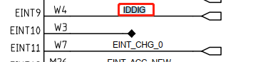
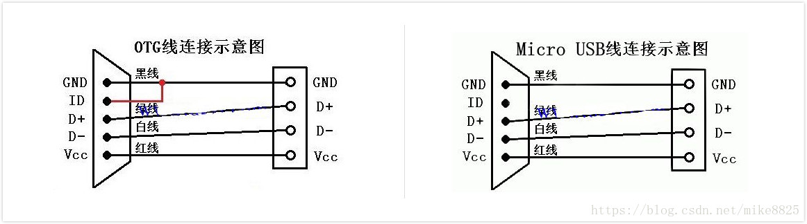

README
usb主从切换主要是通过ID脚和type-c cc脚检测两种方式，分析一下。
refers
原理
先来看下usb otg(主)线和micro usb(从)线的区别。

对应的usb连线如下：

当手机连接到电脑时,vbus为高电平,触发了vbus中断,在中断中确认为高电平后,手机的usb设置从设备,拔出usb线时,vbus变低。
当otg线(id脚和gnd脚是短路的)连接手机后,触发了id中断,检测到id脚为低电平后,手机的usb设置主设备,拔出usb线时,id脚变高。
补充：
当usb作为主设备时,需要提供5v的电压给从设备供电(电池电压一般不超过４.35V),一般需要增加升压芯片或者由支持otg的充电ic提供。
对于typec接口来说，由于没有了id脚，通过cc1,cc2检测相应的设备，通过通知链让usb主动切换到相应的状态。
ID脚检测原理
请参考 插otg的识别过程
CC脚检测原理
通知链处理typec状态，包括切换host devices处理，包括usb插入拔出处理：
static int otg_tcp_notifier_call(struct notifier_block *nb,
unsigned long event, void *data)
{
struct tcp_notify *noti = data;
switch (event) {
case TCP_NOTIFY_SOURCE_VBUS:
DBG(0, "source vbus = %dmv\n", noti->vbus_state.mv);
if (noti->vbus_state.mv)
mt_usb_vbus_on(0);
else
mt_usb_vbus_off(0);
break;
case TCP_NOTIFY_TYPEC_STATE:
DBG(0, "TCP_NOTIFY_TYPEC_STATE, old_state=%d, new_state=%d\n",
noti->typec_state.old_state,
noti->typec_state.new_state);
/* Add-BEGIN by (xxx@xxxxx.com), 2021/08/15 add for M8 usb otg */
mtk_musb->typec_state = noti->typec_state.new_state;
/* Add-END by (xxx@xxxxx.com), 2021/08/15 add for M8 usb otg */
if (noti->typec_state.old_state == TYPEC_UNATTACHED &&
noti->typec_state.new_state == TYPEC_ATTACHED_SRC) {
DBG(0, "OTG Plug in\n");
mt_usb_host_connect(0);
/* Add-BEGIN by (xxx@xxxxx.com), 2021/09/23 add for M8 usb otg */
} else if (noti->typec_state.old_state == TYPEC_UNATTACHED &&
noti->typec_state.new_state == TYPEC_ATTACHED_SNK) {
mt_usb_host_disconnect(0);
mt_usb_connect();
/* Add-END by (xxx@xxxxx.com), 2021/09/23 add for M8 usb otg */
} else if ((noti->typec_state.old_state == TYPEC_ATTACHED_SRC ||
noti->typec_state.old_state == TYPEC_ATTACHED_SNK ||
noti->typec_state.old_state ==
TYPEC_ATTACHED_NORP_SRC) &&
noti->typec_state.new_state == TYPEC_UNATTACHED) {
/* Add-BEGIN by (xxx@xxxxx.com), 2021/08/15 add for M8 usb otg */
if (mtk_musb->default_mode != MUSB_HOST) {
if (is_host_active(mtk_musb)) {
DBG(0, "OTG Plug out\n");
mt_usb_host_disconnect(0);
} else {
DBG(0, "USB Plug out\n");
mt_usb_dev_disconnect();
}
}
else {
if ((noti->typec_state.old_state != TYPEC_ATTACHED_SRC) &&
(noti->typec_state.new_state == TYPEC_UNATTACHED)) {
if (is_host_active(mtk_musb)) {
DBG(0, "OTG Plug out\n");
mt_usb_host_disconnect(0);
} else {
DBG(0, "USB Plug out\n");
mt_usb_dev_disconnect();
}
if (mtk_musb->lcd_state != FB_BLANK_POWERDOWN) {
msleep(50);
mt_usb_host_connect(100);
}
}
else if ((noti->typec_state.old_state == TYPEC_ATTACHED_SRC) &&
(noti->typec_state.new_state == TYPEC_UNATTACHED)) {
if (mtk_musb->lcd_state == FB_BLANK_POWERDOWN) {
if (is_host_active(mtk_musb)) {
DBG(0, "OTG Plug out\n");
mt_usb_host_disconnect(0);
} else {
DBG(0, "USB Plug out\n");
mt_usb_dev_disconnect();
}
}
}
}
/* Add-END by (xxx@xxxxx.com), 2021/08/15 add for M8 usb otg */
#ifdef CONFIG_MTK_UART_USB_SWITCH
} else if ((noti->typec_state.new_state ==
TYPEC_ATTACHED_SNK ||
noti->typec_state.new_state ==
TYPEC_ATTACHED_CUSTOM_SRC ||
noti->typec_state.new_state ==
TYPEC_ATTACHED_NORP_SRC) &&
in_uart_mode) {
pr_info("%s USB cable plugged-in in UART mode.
Switch to USB mode.\n", __func__);
usb_phy_switch_to_usb();
#endif
}
break;
case TCP_NOTIFY_DR_SWAP:
DBG(0, "TCP_NOTIFY_DR_SWAP, new role=%d\n",
noti->swap_state.new_role);
if (is_host_active(mtk_musb) &&
noti->swap_state.new_role == PD_ROLE_UFP) {
DBG(0, "switch role to device\n");
mt_usb_host_disconnect(0);
mt_usb_connect();
} else if (is_peripheral_active(mtk_musb) &&
noti->swap_state.new_role == PD_ROLE_DFP) {
DBG(0, "switch role to host\n");
mt_usb_dev_disconnect();
mt_usb_host_connect(0);
}
break;
}
return NOTIFY_OK;
}